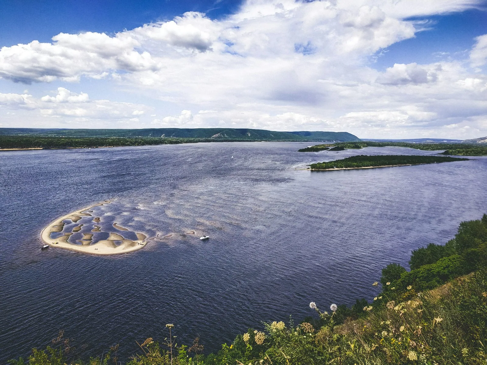
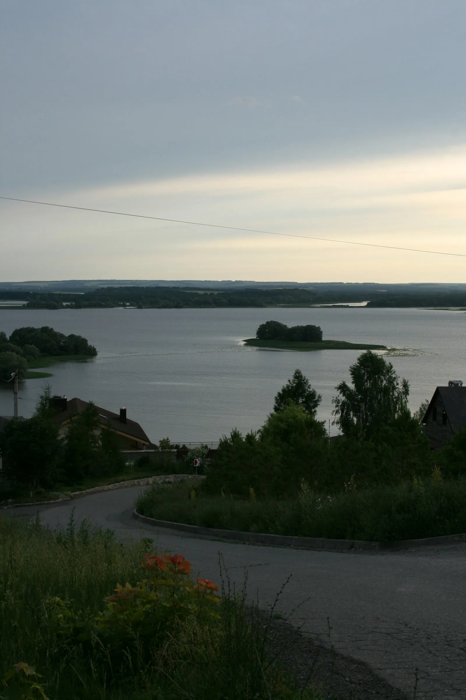
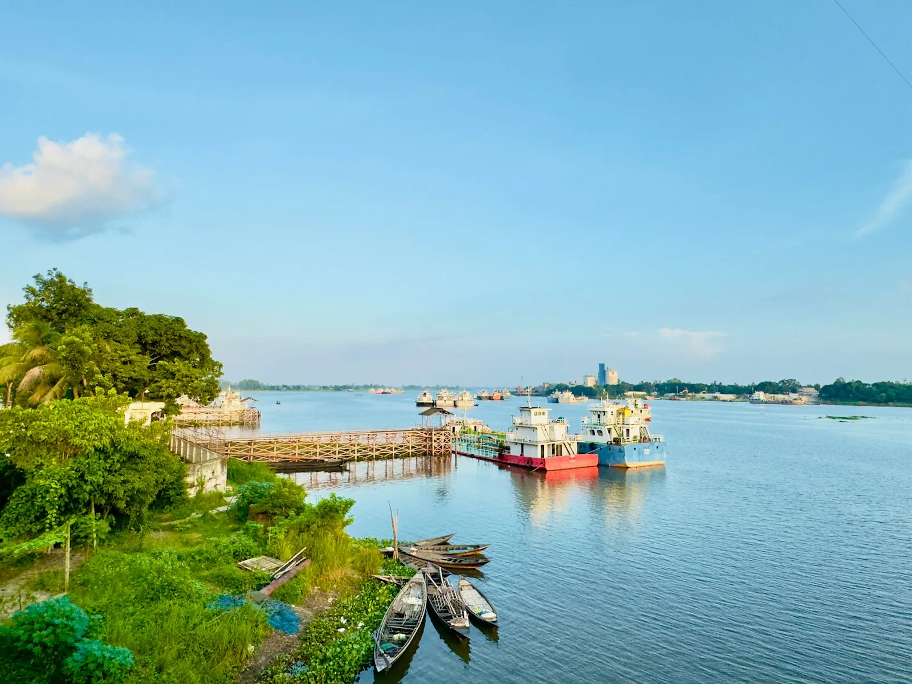
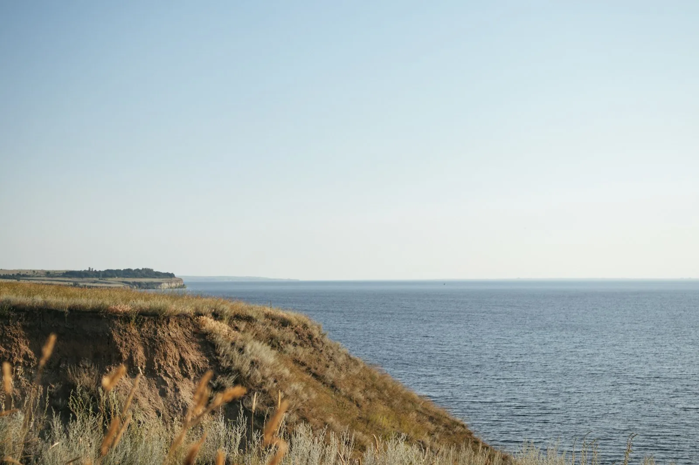

Всё, что
проверено дорогой
Маршруты, истории, разборы подготовки и записи из полевого журнала. У каждого материала есть дата, когда его последний раз проверяли.
Сначала
Транспорт
Тип велосипеда
Тип мотоцикла
Подходит для
Где
Город, река или трасса
За границей только страны, куда можно доехать своим ходом по земле.
Длительность
Сколько дней
Расстояние
Покрытие
Сложность
Фильтр работает для маршрутов. Истории и подготовка остаются в выдаче.
Сезон
Месяцы
Погода и условия
Формат
Маршруты
Люди
Подготовка
Ещё


 Подготовка · снаряжениеКак собрать багаж на два дня6 минут чтения
Подготовка · снаряжениеКак собрать багаж на два дня6 минут чтения
Паром под Макарьевом перешёл на осеннее расписание, последний рейс теперь раньше. Успели впритык, сверяйте перед выездом.

Откосы Волги за один день60 км · вело
Лесом вдоль Керженца110 км · вело Деревни за Семёновом140 км · мото
Деревни за Семёновом140 км · мото

Три переправы за выходные180 км · мото Илья СомовЛюди · интервью«Я начал ездить рядом с домом, когда понял, что ни разу не был в соседнем районе»12 минут чтения
Илья СомовЛюди · интервью«Я начал ездить рядом с домом, когда понял, что ни разу не был в соседнем районе»12 минут чтения Подготовка · ночёвкаГде ставить палатку у реки, чтобы не сдуло5 минут чтения
Подготовка · ночёвкаГде ставить палатку у реки, чтобы не сдуло5 минут чтения

После дождя только на эндуроМаршрут · 3 дня · мотоПо Ветлуге, пока не кончится асфальт≈320 км · проверено в августеКто ехал по правому берегу после Кстово в октябре? Грунтовка уже раскисла?
4 ответа · есть полезныйМаршрут · выходные · мотоДеревни за Семёновом≈140 км · проверено в июле
Показано 14 из 148